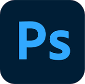
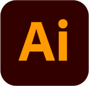
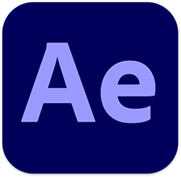
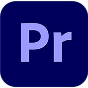
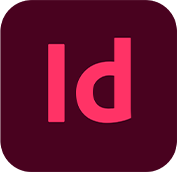
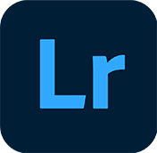
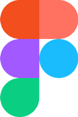
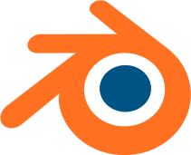

Здравствуйте!
Меня зовут Роман и я графический дизайнер. Хочу работать с проектами как по технической части, так и по креативной. Взамен ожидаю получить опыт в работе с командой и развитие индивидуальных навыков.
Опыт
7 лет художественной школы, 5 лет в BHSAD, 3 год из которых — BA Graphic Design. За последний год закончил более 30 учебных проектов. Спектр заданий: анимация, CSS, JS, работа со шрифтом, верстка книг и постеров, создание небольшого фильма. Самостоятельная практика — разработка логотипа, верстка печатной/цифровой продукции для бренда женской одежды, стажировка младшим дизайнером в онлайн-школе и в офисе печати.
Навыки







